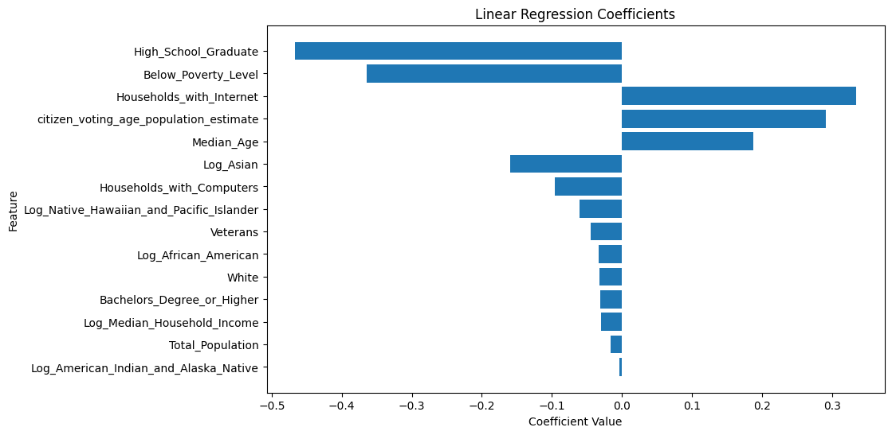
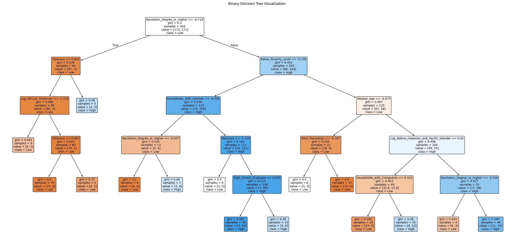
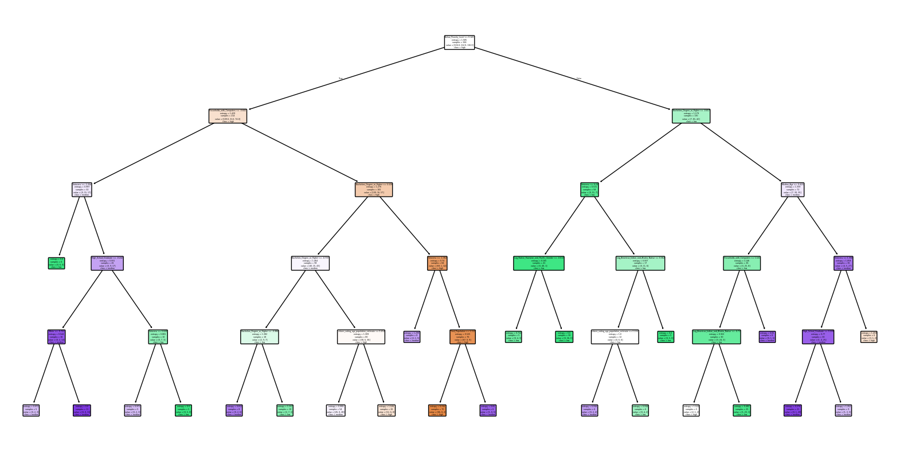

Supervised Learning is a type of Machine Learning where the model is trained with labeled data, and learns relationships between the input and target variable. Once the model learns the relationships, begins to predict or categorize unseen data.
The two main types of Supervised learning include
Regression
Classification
Utilizing Supervised Learning for predicting voting rates is important because it allows us to understand the relationship of input features and voting rate. Furthermore, we have a clear objective, with predicting voting rate as the continuous variable for regression and classifying districts between high and low voting rate
Theory
Regression
Regression is a type of supervised learning that is given labeled data, and the goal is to predict a continuous target variable. It does this by learning the mathematical relationships between the input data and target variable. The data is first cleaned, and the appropriate features are chosen. The data is then split into training and test sets.
The purpose of splitting data into train and test sets is to:
Limit overfitting: Prevent the model from performing very well on data it has seen but poorly on new, unseen data.
By utilizing the test set, you can evaluate how accurate the model is with predicting unseen data.
Regression Accuracy Metrics
The accuracy of a regression model is explained by a series of metrics, MSE, RMSE (Root Mean Square Error), R^2, MAE (Mean Absolute Error), and a parity plot.
Mean Squared Error
MSE quantifies the average squared difference between the actual y values and predicted y values.
Squaring the difference causes the larger errors to be heavily penalized.
This is utilized as a metric to evaluate model performance, with smaller values indicating a more accurate prediction.
R-squared computes the proportion of variance in the target variable explained by the features in the data.
The residual sum of squares (the sum of differences between actual values and predicted values) is divided by Total sum of Squares (sum of differences between the actual value and the mean of all values).
The Residual Sum of Squares quantifies the sum of differences between actual and predicted values, while the Total Sum of Squares computes the sum of squared deviations between actual values and the mean.
Subtracting this proportion by 1 provides us the proportion of variance that the model explains.
This value ranges from 0 to 1, a higher value indicating a greater portion of the variance is explained by the features.
\[
R^2 = 1 - \frac{\text{RSS}}{\text{TSS}}
\]
Parity Plot
A Parity Plot is a visual representation that shows the distribution of actual and predicted values.
A line is plotted showcasing what a perfect fit would look like, and both actual and predicted values are plotted.
If data points are close to the line of best fit, this represents the model is accurate, and if they are far away it indicates the model has errors.
Classification
Classification is form of supervised learning where data is trained on data with labels, and tasked with classifying an instance into different categories. There are many types of classification methods, including Binary and Multiclass Classification.
Binary Classification
Binary Classification is a form of classification where the model must classify data into two groups.
A binary target is chosen for the model to classify the data into, and similar to regression, the data is split into train and test split, but this time to learn the relationship between the binary target and features.
Examples:
Classifying data into High and Low
Classifying data into Boy and Girl
Classifying data into Cat and Dog
Multiclass Classification
Multiclass classification is a form of Supervised learning where there are many categories, and the model attempts to classify an instance into a category.
Examples:
Classifying an image into categories of Dog, Cat or House.
Classifying data as Low,Medium or High
There are multiple forms of classification models, including:
Linear models: Logistic Regression
Tree-Based models: Decision Trees, Random Forests, and Gradient Boost.
Classification Accuracy Metrics
Precision
Precision measures the proportion of positive instances that are labeled positive.
It is used to check for False Positives, where values were incorrectly labeled as True when they were actually False.
A higher precision score indicates fewer False Positives identified.
An Receiver Operating Characteristic (ROC) Curve visualizes the accuracy of the model, plotting the True Positive Rate (Recall) against the False Positive Rate.
By plotting these two values against each other, we can visualize the tradeoff between Recall (accuracy of true positives) and Specificity (accuracy of false positives).
The diagram showcases a diagonal (baseline), from (0,0) to (1, 1) representing a completely random classifier.
If the model’s ROC is higher than this baseline, it means the model performs better than random guessing.
If below the line, it means the model performs worse.
AUC Score
The Area Under the Curve (AUC) score quantifies the total area under the ROC curve.
This measures the overall performance of the model:
1: Perfect model
0.5: Random guessing
< 0.5: Worse than random guessing.
Accuracy
The Accuracy is the ratio of correctly predicted instances to total instances.
It measures the total true accuracy of the model, with a higher value indicating our model classified predictions correctly.
Utilizing the predicted Y value, it finds the best-fit line by iteratively reducing the Mean Squared Error between actual and predicted values.
Lasso Regression
Lasso Regression adds L1 regularization to linear regression, shrinking some coefficients to zero for feature selection and reducing overfitting.
L1 Regularization (used in Lasso Regression) adds the absolute values of the coefficients as a penalty to the cost function.
This forces the model to shrink less important coefficients to zero, basically removing features from the model.
Why L1 Regularization?
Reduces overfitting by penalizing large coefficients.
Automatically performs feature selection, keeping only the most important predictors.
Same as Linear Regression, it finds the best-fit line by iteratively reducing the Mean Squared Error between actual and predicted values, while also affected by L1 regularization
I decided to use Lasso Regression to minimize non-important features.
Classification
Logistic Regression
Logistic regression uses a probabilistic model to predict the probability of an instance being positive or negative.
The model:
Takes in features.
Transforms them with weights.
Utilizes a sigmoid function in Binary Classification to generate a probability between 0 and 1.
Utilizes a softmax function in Multiclass CLassification to generate probabilities for multiple classes.
Decision Tree
A decision tree utilizes feature conditions to split data into smaller and smaller subsets, forming a tree-like structure.
At each node:
The tree evaluates conditions to determine the optimal split.
Accuracy metrics like Gini Index and Entropy measure how well the tree splits data.
Lower values indicate a cleaner split.
By repeatedly splitting and subsetting the data, the decision tree can classify data into both binary and multiclass targets.
Parameters
The parameters for Decision Trees are utilized to prevent overfitting and improve accuracy:
max_depth: Sets the maximum depth of the tree to prevent overfitting and reduce complexity.
min_samples_split: Sets the minimum number of samples required to split at a node.
min_samples_leaf: Indicates the number of samples required to be in a leaf node.
Next step: help understand this better.
Random Forest
Random Forest is similar to Decision Trees but builds multiple trees (ensemble) and combines predictions.
How It Works:
A decision tree is trained on a random subset of data (with replacement).
At each split, only a random subset of features is considered.
Once multiple trees are established:
Each tree votes for a class.
The majority vote determines the final prediction.
Advantages:
Helps prevent overfitting.
Robust to outliers.
Parameters
The parameters for Random Forests are the same as Decision Trees but include:
n_estimators: Number of decision trees used in the forest.
Cross Validation
Cross Validation is a technique used in Supervised Learning to assess how well the model adapts to unseen data.
The data is split into k folds of equally sized subjets
For each iteration, k-1 folds are used to train the model.
The remaining fold is used for cross validation.
This is repeated k times, and the results are averaged to provide a reliable metric for accuracy.
Why Cross Validation is Important
Instead of using just 1 train-test split, the model is able to:
Train and validate many subset of data.
Ensure the most reliable model performance
Advantages
Prevents the data from overfitting
Provides powerful evaluation metric for model
Disadvantages
Complex for large datasets
Feature Selection
I chose to drop features that did not provide any informative information or provided redundant information.
Dropped Features: Congressional District, District Name, State, State Abbreviation, Non-Veterans, and Votes Cast.
Reasons:
- Congressional District: A string that held the official title of the district.
- District Name: A label that interferes with the model.
- State: A string of the full state name - State Abbreviation: A string of abbreviated state name - Non-Veterans: Redundant because we already have values for veterans. - Votes Cast: Caused the model to be too strong, as this feature came from the same data set and represent the same information as our target variable, Voting Rate.
One Hot Encoding
I chose not to use One Hot Encoding for states because:
- It increased the dimensionality of my data drastically.
- It caused issues in my regression analysis, with very low accuracy and tendency to overfit.
- I believed the state’s voting policies, culture, and access to voting were already reflected in the numerical features.
What is One Hot Encoding?
Converts categorical features into numerical values.
A new column is created for each category, with values:
1: Indicates True.
0: Indicates False.
Final Features:
I chose to leave all the other features as they may influence and indicate different turnouts in the data.
Code
import pandas as pdimport numpy as npmerged_standard_log_df = pd.read_csv('../../data/processed-data/merged_standard_log.csv') # Drop unnecessary columnscolumns_to_drop = ['Nonveterans', 'Congressional_District', 'state_abbreviation', 'District_Name', 'state', 'votes_cast']processed_df = merged_standard_log_df.drop(columns=columns_to_drop)print("Final Columns for Modeling:")print(processed_df.columns)
I set the Voting Rate Estimate as the target variable, All other variables are used as features to train the model.
Train-Test Split:
- X_train: 80% of the features.
- X_test: 20% of the features.
- y_train: Voting Rate Estimate for 80% of the data.
- y_test: Voting Rate Estimate for the other 20%.
Code
target ='voting_rate_estimate'# Drop the target from the featuresfeatures = processed_df.drop(columns=[target])from sklearn.model_selection import train_test_split# Split the dataX_train, X_test, y_train, y_test = train_test_split( features, processed_df[target], test_size=0.2, random_state=42)from sklearn.linear_model import LinearRegressionfrom sklearn.metrics import mean_squared_error, mean_absolute_error, r2_scoreimport matplotlib.pyplot as pltimport numpy as np# Initialize the modellinear_reg = LinearRegression()# Train the modellinear_reg.fit(X_train, y_train)# Make predictionsy_pred_train = linear_reg.predict(X_train)y_pred_test = linear_reg.predict(X_test)# Evaluate the modelmse_train = mean_squared_error(y_train, y_pred_train)mse_test = mean_squared_error(y_test, y_pred_test)r2_train = r2_score(y_train, y_pred_train)r2_test = r2_score(y_test, y_pred_test)# Compute RMSE and MAErmse_train = np.sqrt(mse_train)rmse_test = np.sqrt(mse_test)mae_train = mean_absolute_error(y_train, y_pred_train)mae_test = mean_absolute_error(y_test, y_pred_test)# Print resultsprint(f"Train RMSE: {rmse_train}, MAE: {mae_train}, R^2: {r2_train}")print(f"Test RMSE: {rmse_test}, MAE: {mae_test}, R^2: {r2_test}")# Create a parity plotplt.figure(figsize=(8, 6))plt.scatter(y_test, y_pred_test, alpha=0.7, edgecolors='k', label='Test Data')plt.scatter(y_train, y_pred_train, alpha=0.7, edgecolors='r', label='Train Data')plt.plot([y_train.min(), y_train.max()], [y_train.min(), y_train.max()], color='blue', linestyle='--', label='Perfect Fit')plt.xlabel("Actual Values")plt.ylabel("Predicted Values")plt.title("Parity Plot")plt.legend()plt.grid()plt.show()
# After training the modelcoefficients = linear_reg.coef_ # Get coefficientsfeature_names = X_train.columns # Get feature names# Combine coefficients with feature namesimportance_df = pd.DataFrame({'Feature': feature_names,'Coefficient': coefficients}).sort_values(by='Coefficient', ascending=False, key=abs) # Sort by absolute value# Display top predictorsprint("Top Predictors for Linear Regression:")print(importance_df.head(10))
plt.figure(figsize=(10, 6))plt.barh(importance_df['Feature'], importance_df['Coefficient'])plt.xlabel("Coefficient Value")plt.ylabel("Feature")plt.title("Linear Regression Coefficients")plt.gca().invert_yaxis() # Reverse order for better readabilityplt.show()

he biggest coefficents was High School Graduate and Poverty Level, both with negative coefficients. Households with Internet, Voting Age population, and MedianAge were the next biggest coefficiences, and were all positive.
Metric Train Test
0 RMSE 0.565238 0.570960
1 MAE 0.434938 0.465694
2 R^2 0.676500 0.688508
Conducting the Linear regression analysis, the data accuracy metrics indicated that our model performed well on both sets of data.
Train RMSE had a value of 0.565, and Test RMSE had a value of 0.571.
This indicates that, on average, when testing, the model’s prediction of voting rate was 0.571 standardized units from the actual value.
The model had similar RMSE values for the test set and the training set, indicating the model is doing well in applying its training to unseen data.
Train MAE and Test MAE also indicated the model did very well:
Train MAE: 0.435
Test MAE: 0.466
This shows that the average absolute difference between predicted and actual values is very small.
R² values for both the Train and Test sets indicated that more than half of the variance is explained by the model:
Train R²: 0.677
Test R²: 0.689
This means that 68.9% of the variance in the test data can be explained.
The Test R² had a slightly higher (more accurate) value than the Train R², suggesting that the model is very good at predicting unseen values.
The parity plot of the cross-validated data looks very similar to the non-cross-validated model, indicating that our model is moderately accurate in predicting voting rates.
Conducting Cross Validation Linear regression analysis, the data accuracy metrics indicated that our model performed similarly to the non-cross-validated Log Regression model.
The average RMSE had a value of 0.58, slightly higher than 0.565 from the non-cross-validated model.
The model also had an MAE of 0.45 and R^2 value of 0.69, both higher values than without cross validating.
The Cross Validation Accuracy Metrics tells us that there was not a big difference in accuracy between this model and the model that didn’t utilize Cross Validation.
Lasso Regression
Code
from sklearn.linear_model import Lassofrom sklearn.model_selection import train_test_splitfrom sklearn.metrics import mean_squared_error, mean_absolute_error, r2_scoreimport matplotlib.pyplot as pltimport numpy as np# Define the target and featurestarget ='voting_rate_estimate'features = processed_df.drop(columns=[target])# Split the dataX_train, X_test, y_train, y_test = train_test_split( features, processed_df[target], test_size=0.2, random_state=42)# Initialize Lasso Regression with alpha (regularization strength)lasso_reg = Lasso(alpha=0.01, random_state=42) # You can tune 'alpha' for stronger or weaker regularization# Train the modellasso_reg.fit(X_train, y_train)# Make predictionsy_pred_train = lasso_reg.predict(X_train)y_pred_test = lasso_reg.predict(X_test)# Evaluate the modelmse_train = mean_squared_error(y_train, y_pred_train)mse_test = mean_squared_error(y_test, y_pred_test)r2_train = r2_score(y_train, y_pred_train)r2_test = r2_score(y_test, y_pred_test)# Compute RMSE and MAErmse_train = np.sqrt(mse_train)rmse_test = np.sqrt(mse_test)mae_train = mean_absolute_error(y_train, y_pred_train)mae_test = mean_absolute_error(y_test, y_pred_test)# Print evaluation metricsprint(f"Lasso Regression Results:")print(f"Train RMSE: {rmse_train:.4f}, MAE: {mae_train:.4f}, R²: {r2_train:.4f}")print(f"Test RMSE: {rmse_test:.4f}, MAE: {mae_test:.4f}, R²: {r2_test:.4f}")# Display coefficientslasso_coefficients = pd.DataFrame({'Feature': X_train.columns,'Coefficient': lasso_reg.coef_}).sort_values(by='Coefficient', ascending=False)# Parity Plotplt.figure(figsize=(8, 6))plt.scatter(y_test, y_pred_test, alpha=0.7, edgecolors='k', label='Test Data')plt.scatter(y_train, y_pred_train, alpha=0.7, edgecolors='r', label='Train Data')plt.plot([y_train.min(), y_train.max()], [y_train.min(), y_train.max()], color='blue', linestyle='--', label='Perfect Fit')plt.xlabel("Actual Values")plt.ylabel("Predicted Values")plt.title("Lasso Regression Parity Plot")plt.legend()plt.grid()plt.show()
Metric Train Test
0 RMSE 0.5673 0.5767
1 MAE 0.4337 0.4691
2 R² 0.6741 0.6822
Conducting the Lasso Regression analysis, the data accuracy metrics indicated that our model perfomed similar to linear regression.
Train RMSE had a value of 0.567, and Test RMSE had a value of 0.577.
This indicates that, on average, when testing, the model’s prediction was 0.577 standardized units from the actual value.
The model had similar RMSE values for the test set and the training set, indicating the model is doing well in applying its training to unseen data.
Train MAE and Test MAE also indicated the model performed well:
Train MAE: 0.434
Test MAE: 0.469
This shows that the average absolute difference between predicted and actual values is very small.
R² values for both the Train and Test sets showed that a significant proportion of the variance is explained by the model:
Train R²: 0.674
Test R²: 0.682
This means that 68.2% of the variance in the test data can be explained.
The Lasso R² value was slightly lower value than the Linear Regressioin R² value(0.0682).
Similar to Linear Regression, The parity plot of the cross-validated data reflects a consistent alignment of predicted and actual values, suggesting that the model is accurate and reliable for predicting the target variable.
Conclusion
These metrics tell us that our model is performing moderately well with both sets of data, as well as with and without cross validation.
For both methods, both RMSE and MAE values are moderately close to zero.
Both methods have a moderately high R² value, indicating our predicted values are close to actual values.
Linear Regression, Lasso Regression, and implimenting Cross Validation all provided almost identical accuracy metrics, with Linear regression having the lowest RMSE value , and cross validated linear regression having the lowest MAE and R^2 value.
This tells us that the model has begun to learn trends and relationships in the data to predict voting rates with moderately high accuracy.
Real World Application
This model has implications for real-world use. However, with a prediction error of 0.57 standardized units, the model still requires further improvement and calibration before being reliably applied in real voting scenarios. Doing this will allow policymakers and analysts to gain insights and make educated decisions.
Binary Classification
Target Selection
I chose my Binary Classification target as ‘High Voting Rate’ and ‘Low Voting Rate’. Districts were labeled as High Voting Rate if the voting rate exceeded the mean voting rate.
Log Regression Binary Classification
Code
from sklearn.linear_model import LogisticRegressionfrom sklearn.model_selection import train_test_splitfrom sklearn.metrics import classification_report, confusion_matrix, roc_auc_score, roc_curveimport matplotlib.pyplot as pltimport seaborn as snsmerged_standard_log_df['High_Voting_Rate'] = (merged_standard_log_df['voting_rate_estimate'] > merged_standard_log_df['voting_rate_estimate'].median()).astype(int)# Define target and featuresbinary_target ='High_Voting_Rate'# Ensure High_Voting_Rate is included in processed_dfprocessed_df['High_Voting_Rate'] = merged_standard_log_df['High_Voting_Rate']# Remove binary and regression targets from featuresfeatures = processed_df.drop(columns=[binary_target, 'voting_rate_estimate'])# Split the dataX_train, X_test, y_train, y_test = train_test_split( features, processed_df[binary_target], test_size=0.2, random_state=42)# Initialize the Logistic Regression modellog_reg = LogisticRegression(max_iter=1000, random_state=42)# Train the modellog_reg.fit(X_train, y_train)# Make predictionsy_pred_train = log_reg.predict(X_train) #predict classes for training set y_pred_test = log_reg.predict(X_test) #predict classes for test set y_prob_test = log_reg.predict_proba(X_test)[:, 1] # Probabilities for ROC curve# Evaluate the modelprint("Classification Report (Test Data):")print(classification_report(y_test, y_pred_test))# Confusion Matrixconf_matrix = confusion_matrix(y_test, y_pred_test)plt.figure(figsize=(6, 4))sns.heatmap(conf_matrix, annot=True, fmt='d', cmap='Blues', xticklabels=['Low', 'High'], yticklabels=['Low', 'High'])plt.title("Confusion Matrix")plt.xlabel("Predicted")plt.ylabel("Actual")plt.show()# ROC Curvefpr, tpr, thresholds = roc_curve(y_test, y_prob_test)roc_auc = roc_auc_score(y_test, y_prob_test)plt.figure(figsize=(8, 6))plt.plot(fpr, tpr, label=f'ROC Curve (AUC = {roc_auc:.2f})')plt.plot([0, 1], [0, 1], 'k--', label="Random Classifier")plt.xlabel("False Positive Rate")plt.ylabel("True Positive Rate")plt.title("Receiver Operating Characteristic (ROC) Curve")plt.legend()plt.grid()plt.show()
data_classification_report = {"Class": [0, 1, "accuracy", "macro avg"],"Precision": [0.89, 0.77, None, 0.83],"Recall": [0.72, 0.91, None, 0.82],"F1-Score": [0.79, 0.83, 0.82, 0.81],"Support": [43, 44, 87, 87]}# Create the DataFrame for the classification reportdf_classification_report = pd.DataFrame(data_classification_report)# Display the DataFrameprint(df_classification_report)
Class Precision Recall F1-Score Support
0 0 0.89 0.72 0.79 43
1 1 0.77 0.91 0.83 44
2 accuracy NaN NaN 0.82 87
3 macro avg 0.83 0.82 0.81 87
Precision
The accuracy metrics for our model showed that precision scores were very high, with values of 89% for Low Voting Rate and 77% for High Voting Rate.
Recall
Recall scores were also very high, with 91% for High Voting Rate and 72% for Low Voting Rate, indicating that the model captured most true positives.
F1
The F1 score was 83% for High Voting Rate, reflecting a good balance between Precision and Recall. The overall accuracy was also 82%, showcasing a model that is effective in distinguishing between two classes.
Confusion Matrix
The Confusion Matrix shows the results of the Log Regression Binary Classification model:
The model correctly predicted 40 values of ‘High Voting Rate’ (True Positives).
The model correctly predicted 31 values of ‘Low Voting Rate’ (True Negatives).
The model incorrectly classified 12 values as ‘High Voting Rate’ when they were actually low (False Positive).
The model incorrectly classified 4 values as ‘Low Voting Rate’ when they were actually high (False Negative).
ROC Curve
The ROC Curve showcases an AUC score of 0.87, indicating an accurate model that distinguishes between Low and High voting rates.
The curve rises steeply, indicating the model quickly achieves a high True Positive Rate with low False Positive Rate.
Furthermore, the curve is significantly higher than the diagonal baseline, showing that the model is better than a random classifier.
Decision Tree Binary Classification
Code
from sklearn.tree import DecisionTreeClassifierfrom sklearn.metrics import classification_report, confusion_matriximport matplotlib.pyplot as pltimport seaborn as sns# Define the Decision Tree modeldt_clf = DecisionTreeClassifier( criterion="gini", # Use 'gini' or 'entropy' to measure split quality max_depth=5, # Maximum depth of the tree to prevent overfitting min_samples_split=10, # Minimum samples needed to split an internal node min_samples_leaf=5, # Minimum samples in each leaf node random_state=42# Ensure reproducibility)# Train the Decision Treedt_clf.fit(X_train, y_train)# Make predictionsy_pred_train = dt_clf.predict(X_train) # Predict on training datay_pred_test = dt_clf.predict(X_test) # Predict on test data# Evaluate the modelprint("Decision Tree - Classification Report (Binary):")print(classification_report(y_test, y_pred_test))# Confusion Matrixconf_matrix = confusion_matrix(y_test, y_pred_test)plt.figure(figsize=(6, 4))sns.heatmap(conf_matrix, annot=True, fmt='d', cmap='Blues', xticklabels=['Low', 'High'], yticklabels=['Low', 'High'])plt.title("Decision Tree - Confusion Matrix")plt.xlabel("Predicted")plt.ylabel("Actual")plt.show()
Decision Tree Binary Classification Accuracy Analysis
Code
data_decision_tree_binary = {"Class": [0, 1, "accuracy", "macro avg"],"Precision": [0.76, 0.64, None, 0.70],"Recall": [0.51, 0.84, None, 0.68],"F1-Score": [0.61, 0.73, 0.68, 0.67],"Support": [43, 44, 87, 87]}# Create the DataFrame for the Decision Tree binary reportdf_decision_tree_binary = pd.DataFrame(data_decision_tree_binary)# Display the DataFrameprint(df_decision_tree_binary)
Class Precision Recall F1-Score Support
0 0 0.76 0.51 0.61 43
1 1 0.64 0.84 0.73 44
2 accuracy NaN NaN 0.68 87
3 macro avg 0.70 0.68 0.67 87
Precision
The accuracy metrics for our model showed that precision scores were moderately high but varied, with values of 76% for Low Voting Rate and 76% for High Voting Rate. These two scores were also lower than Binary Classification with Log Regression.
Recall
Recall scores showcased the same pattern of varied values for different classes, with 84% for High Voting Rate and 51% for Low Voting Rate.
- This indicates that the model captured most true positives for High Voting Rates but struggled with Low Voting Rates.
F1
The F1 score was 73% for High Voting Rate, reflecting a pretty good balance between Precision and Recall.
- The overall accuracy was 68%, showcasing a model that is moderately successful in distinguishing between two classes.
- These values were also lower than Binary Classification with Log Regression.
Confusion Matrix
The Confusion Matrix shows the results of the Log Regression Binary Classification model:
The model correctly predicted 37 values of ‘High Voting Rate’ (True Positives).
The model correctly predicted 22 values of ‘Low Voting Rate’ (True Negatives).
The model incorrectly classified 21 values as ‘High Voting Rate’ when they were actually low (False Positive).
The model incorrectly classified 7 values as ‘Low Voting Rate’ when they were actually high (False Negative).
Decision Tree
Code
from sklearn.tree import plot_tree# Visualize the Decision Treeplt.figure(figsize=(32, 15)) # Adjust size for better readabilityplot_tree( dt_clf, feature_names=X_train.columns, # Use feature names from your dataset class_names=['Low', 'High'], # Binary class names filled=True, # Fill nodes with colors rounded=True, # Rounded corners for better visualization fontsize=10# Adjust font size for readability)plt.title("Binary Decision Tree Visualization")plt.show()

The first split is based on if Bachelors_Degree_or_Higher< -0.719, with a Gini index of 0.5. This indicates an impure split, and we can see that with the almost perfectly symmetric data values.
If the data point is less than -0.719, it goes left, if it is more than -0.719, it goes right. It then gets asked another criteria, and the data splits.
Random Forest Binary Classification
Code
from sklearn.ensemble import RandomForestClassifierfrom sklearn.metrics import classification_report, confusion_matrix, roc_auc_score, roc_curveimport seaborn as snsimport matplotlib.pyplot as plt# Define the Random Forest modelrf_clf = RandomForestClassifier( n_estimators=100, # Number of trees max_depth=10, # Maximum depth of trees (to avoid overfitting) random_state=42, # For reproducibility class_weight='balanced'# Handle any imbalance in data)# Train the modelrf_clf.fit(X_train, y_train)# Make predictionsy_pred_train = rf_clf.predict(X_train) # Predict on training datay_pred_test = rf_clf.predict(X_test) # Predict on test datay_prob_test = rf_clf.predict_proba(X_test)[:, 1] # Probabilities for ROC curve# Evaluate the modelprint("Random Forest - Classification Report (Test Data):")print(classification_report(y_test, y_pred_test))# Confusion Matrixconf_matrix = confusion_matrix(y_test, y_pred_test)plt.figure(figsize=(6, 4))sns.heatmap(conf_matrix, annot=True, fmt='d', cmap='Blues', xticklabels=['Low', 'High'], yticklabels=['Low', 'High'])plt.title("Random Forest - Confusion Matrix")plt.xlabel("Predicted")plt.ylabel("Actual")plt.show()
The Random Forest feature importance quantifies how much each feature contributed to the random forest. Each value is computed by how much each feature reduced the Gini score (error).
For Binary Classification, the Random Forest deemed Bachelors Degree or Higher, Poverty Level, Internet Accecss, and Median Household Income as the most defining features in making splits.
Random Forest Binary Classification Accuracy Analysis
Code
data_random_forest_updated = {"Class": [0, 1, "accuracy", "macro avg"],"Precision": [0.87, 0.81, None, 0.84],"Recall": [0.79, 0.89, None, 0.84],"F1-Score": [0.83, 0.85, 0.84, 0.84],"Support": [43, 44, 87, 87]}# Create the DataFrame for the updated Random Forest reportdf_random_forest_binary = pd.DataFrame(data_random_forest_updated)print(df_random_forest_binary)# Display the DataFrame
Class Precision Recall F1-Score Support
0 0 0.87 0.79 0.83 43
1 1 0.81 0.89 0.85 44
2 accuracy NaN NaN 0.84 87
3 macro avg 0.84 0.84 0.84 87
Precision
The accuracy metrics for our model showed that precision scores were moderately high but varied, with values of:
- 76% for Low Voting Rate
- 76% for High Voting Rate
These two scores were also lower than Binary Classification with Log Regression.
Recall
Recall scores showcased the same pattern of varied values for different classes:
- 84% for High Voting Rate
- 51% for Low Voting Rate
This indicates that the model captured most true positives for High Voting Rates but struggled with Low Voting Rates.
F1
The F1 score was 73% for High Voting Rate, reflecting a pretty good balance between Precision and Recall.
- The overall accuracy was 68%, showcasing a model that is moderately successful in distinguishing between two classes.
- These values were also lower than Binary Classification with Log Regression.
Confusion Matrix
The Confusion Matrix shows the results of the Random Forest Binary Classification model:
- The model correctly predicted 39 values of ‘High Voting Rate’ (True Positives).
- The model correctly predicted 34 values of ‘Low Voting Rate’ (True Negatives).
- The model incorrectly classified 9 values as ‘High Voting Rate’ when they were actually low (False Positive).
- The model incorrectly classified 5 values as ‘Low Voting Rate’ when they were actually high (False Negative).
Random Forest and Logistic Regression had the most precise classification, with tradeoffs between them, while Decision Tree was the least accurate. Random Forest performed much better than Decision Tree and had similar accuracy to Logistic Regression.
Logistic Regression - Lower Voting Class
Precision: 0.89
Recall: 0.72
F1 Score: 0.79
Random Forest - Lower Voting Class
Precision: 0.87
Recall: 0.79
F1 Score: 0.83
Logistic Regression had a higher Precision score in classifying “Lower Voting Class,” while Random Forest had a higher Recall and F1 score.
Logistic Regression - Higher Voting Class
Precision: 0.77
Recall: 0.91
F1 Score: 0.83
Random Forest - Higher Voting Class
Precision: 0.81
Recall: 0.89
F1 Score: 0.85
Logistic Regression had a lower Precision and F1 score in classifying “Higher Voting Class” compared to Random Forest, but achieved a higher Recall score.
Summary
Random Forest and Logistic Regression show similar performance overall, with tradeoffs in Precision, Recall, and F1 scores across both classes.
Decision Tree underperformed compared to the other two methods.
Multiclass Classification
Target Selection
I chose my Binary Classification targets as:
- Low Voting Rate
- Medium Voting Rate
- High Voting Rate
The data was split into three quantiles:
- Districts in the upper quartile were labeled as High Voting Rate.
- Districts in the middle quantile were labeled as Medium Voting Rate.
- Districts in the lower quantile were labeled as Low Voting Rate.
Log Regression Multiclass Classification
Code
percentiles = processed_df['voting_rate_estimate'].quantile([0.33, 0.66])# Create a new multiclass target columndef classify_voting_rate(voting_rate):if voting_rate <= percentiles[0.33]:return'low'elif voting_rate <= percentiles[0.66]:return'median'else:return'high'processed_df['Voting_Rate_Category'] = processed_df['voting_rate_estimate'].apply(classify_voting_rate)# print(processed_df['Voting_Rate_Category'].value_counts())# Define target and featuresmulticlass_target ='Voting_Rate_Category'features = processed_df.drop(columns=['Voting_Rate_Category', 'voting_rate_estimate', 'High_Voting_Rate'])# Encode target variable into numeric valuesfrom sklearn.preprocessing import LabelEncoderlabel_encoder = LabelEncoder()processed_df['Voting_Rate_Category_Encoded'] = label_encoder.fit_transform(processed_df[multiclass_target])# Split the dataX_train, X_test, y_train, y_test = train_test_split( features, processed_df['Voting_Rate_Category_Encoded'], test_size=0.2, random_state=42)from sklearn.linear_model import LogisticRegressionfrom sklearn.metrics import classification_report, confusion_matriximport seaborn as snsimport matplotlib.pyplot as plt# Initialize the Logistic Regression model with multinomial optionlog_reg_multi = LogisticRegression(multi_class='multinomial', solver='lbfgs', max_iter=1000)# Train the modellog_reg_multi.fit(X_train, y_train)# Make predictionsy_pred_train = log_reg_multi.predict(X_train)y_pred_test = log_reg_multi.predict(X_test)# Evaluate the modelprint("Log Regression - Classification Report (Test Data):")print(classification_report(y_test, y_pred_test, target_names=label_encoder.classes_))# Confusion Matrixconf_matrix = confusion_matrix(y_test, y_pred_test)plt.figure(figsize=(8, 6))sns.heatmap(conf_matrix, annot=True, fmt='d', cmap='Blues', xticklabels=label_encoder.classes_, yticklabels=label_encoder.classes_)plt.title("Confusion Matrix")plt.xlabel("Predicted")plt.ylabel("Actual")plt.show()
/Users/iphone10/miniconda3/lib/python3.10/site-packages/sklearn/linear_model/_logistic.py:1247: FutureWarning: 'multi_class' was deprecated in version 1.5 and will be removed in 1.7. From then on, it will always use 'multinomial'. Leave it to its default value to avoid this warning.
warnings.warn(
Class Precision Recall F1-Score Support
0 high 0.76 0.81 0.78 31
1 low 0.83 0.67 0.74 30
2 median 0.47 0.54 0.50 26
3 accuracy NaN NaN 0.68 87
4 macro avg 0.69 0.67 0.67 87
High Voting Rates
The accuracy metrics for our model showed that for classification into High Voting Rates:
- Precision: 0.76 → Of the instances predicted as ‘high,’ 76% were correct.
- Recall: 0.81
- F1 Score: 0.78
These metrics indicate our model was pretty accurate in predicting the “High Voting Rate” class.
Low Voting Rates
For classification into Low Voting Rates, our model achieved:
- Precision: 0.83
- Recall: 0.67
- F1 Score: 0.74
Similarly to “High Voting Rate,” these metrics indicate our model was accurate in predicting the “Low Voting Rate” class.
Median Voting Rates
For classification into Median Voting Rates, our model had:
- Precision: 0.47
- Recall: 0.54
- F1 Score: 0.50
These metrics indicate our model had a more difficult time classifying “Median Voting Rates.”
- The overall model accuracy was 0.68, indicating a moderately accurate model but with room for improvement.
Macro Average
The Macro Average metrics were:
- Precision: 0.69
- Recall: 0.67
- F1 Score: 0.67
These scores indicate that our model performed pretty well across classes, but was dragged down by the low accuracy scores in classifying “Median Voting Rates.”
Confusion Matrix
The Confusion Matrix shows the results of the multiclass classification model:
- Correctly predicted 25 values of ‘High Voting Rate’ (True Positives).
- Correctly predicted 20 instances of ‘Low Voting Rate’ (True Positives).
- Correctly predicted 14 instances of ‘Median Voting Rate.’
ROC Curve
The ROC Curve showcases an AUC score of 0.87, indicating an accurate model that distinguishes between Low and High voting rates.
- The curve rises steeply, indicating the model quickly achieves a high True Positive Rate with a low False Positive Rate.
- Furthermore, the curve is significantly higher than the diagonal (baseline) curve, showing that the model is better than a random classifier.
Decision Tree Multiclass Classification
Code
from sklearn.tree import DecisionTreeClassifierfrom sklearn.metrics import classification_report, confusion_matriximport seaborn as snsimport matplotlib.pyplot as plt# Initialize Decision Tree Classifierdt_clf_multi = DecisionTreeClassifier( criterion='entropy', # Use 'entropy' to measure information gain max_depth=5, # Limit depth to prevent overfitting min_samples_split=10, # Minimum samples to split a node min_samples_leaf=5, # Minimum samples in each leaf node random_state=42# For reproducibility)# Train the modeldt_clf_multi.fit(X_train, y_train)# Make predictionsy_pred_train = dt_clf_multi.predict(X_train)y_pred_test = dt_clf_multi.predict(X_test)# Evaluate the modelprint("Decision Tree - Classification Report (Test Data):")print(classification_report(y_test, y_pred_test, target_names=label_encoder.classes_))# Confusion Matrixconf_matrix = confusion_matrix(y_test, y_pred_test)plt.figure(figsize=(8, 6))sns.heatmap(conf_matrix, annot=True, fmt='d', cmap='Blues', xticklabels=label_encoder.classes_, yticklabels=label_encoder.classes_)plt.title("Decision Tree - Confusion Matrix")plt.xlabel("Predicted")plt.ylabel("Actual")plt.show()
Class Precision Recall F1-Score Support
0 high 0.64 0.68 0.66 31
1 low 0.79 0.50 0.61 30
2 median 0.37 0.50 0.43 26
3 accuracy NaN NaN 0.56 87
4 macro avg 0.60 0.56 0.56 87
High Voting Rates
The accuracy metrics for our model showed that for classification into High Voting Rates:
- Precision: 0.64 → Of the instances predicted as ‘high,’ 64% were correct.
- Recall: 0.68
- F1 Score: 0.66
These metrics indicate our model was moderately accurate in predicting the “High Voting Rate” class.
Low Voting Rates
For classification into Low Voting Rates, our model achieved:
- Precision: 0.79
- Recall: 0.50
- F1 Score: 0.71
Similarly to “High Voting Rate,” these metrics indicate our model was accurate in predicting the “Low Voting Rate” class.
Median Voting Rates
For classification into Median Voting Rates, our model only achieved:
- Precision: 0.37
- Recall: 0.50
- F1 Score: 0.61
These metrics indicate our model had a difficult time classifying “Median Voting Rates.”
Accuracy
The model had an accuracy of 0.56, indicating a moderately accurate model but with room for improvement.
Macro Average
The Macro Average metrics were:
- Precision: 0.60
- Recall: 0.56
- F1 Score: 0.56
These scores indicate that our model performed a little better than average in accuracy metrics across classes. However, similar to earlier, performance was dragged down by the low accuracy scores in classifying “Median Voting Rates.”
Confusion Matrix
The Confusion Matrix shows the results of the multiclass classification model:
- Correctly predicted 21 values of ‘High Voting Rate’ (True Positives).
- Correctly predicted 15 instances of ‘Low Voting Rate’ (True Positives).
- Correctly predicted 13 instances of ‘Median Voting Rate.’
Decision Tree
Code
from sklearn.tree import plot_treeplt.figure(figsize=(20, 10))plot_tree( dt_clf_multi, feature_names=X_train.columns, class_names=label_encoder.classes_, filled=True, rounded=True)plt.show()

Random Forest Multiclass Classification
Code
from sklearn.ensemble import RandomForestClassifier# Initialize Random Forest Classifierrf_clf_multi = RandomForestClassifier( n_estimators=100, # Number of trees max_depth=10, # Maximum depth of trees min_samples_split=10, # Minimum samples to split a node min_samples_leaf=5, # Minimum samples in each leaf node random_state=42# For reproducibility)# Train the modelrf_clf_multi.fit(X_train, y_train)# Make predictionsy_pred_train = rf_clf_multi.predict(X_train)y_pred_test = rf_clf_multi.predict(X_test)# Evaluate the modelprint("Random Forest - Classification Report (Test Data):")print(classification_report(y_test, y_pred_test, target_names=label_encoder.classes_))# Confusion Matrixconf_matrix = confusion_matrix(y_test, y_pred_test)plt.figure(figsize=(8, 6))sns.heatmap(conf_matrix, annot=True, fmt='d', cmap='Blues', xticklabels=label_encoder.classes_, yticklabels=label_encoder.classes_)plt.title("Random Forest - Confusion Matrix")plt.xlabel("Predicted")plt.ylabel("Actual")plt.show()
For Multiclass Classification, the Random Forest deemed Bachelors Degree or Higher, Poverty Level, Internet Access, Households with Computers, Median Household Income as the most defining features in making splits.
Random Forest Multiclass Classification Analysis
Code
import pandas as pd# Data for the classification reportrandom_forest_metrics = {"Class": ["high", "low", "median", "accuracy", "macro avg"],"Precision": [0.68, 0.82, 0.39, None, 0.63],"Recall": [0.81, 0.60, 0.42, None, 0.61],"F1-Score": [0.74, 0.69, 0.41, 0.62, 0.61],"Support": [31, 30, 26, 87, 87]}random_forest_multi_df = pd.DataFrame(random_forest_metrics)print(random_forest_multi_df)
Class Precision Recall F1-Score Support
0 high 0.68 0.81 0.74 31
1 low 0.82 0.60 0.69 30
2 median 0.39 0.42 0.41 26
3 accuracy NaN NaN 0.62 87
4 macro avg 0.63 0.61 0.61 87
High Voting Rates
The accuracy metrics for our model showed that for classification into High Voting Rates:
- Precision: 0.68 → Of the instances predicted as ‘high,’ 68% were correct.
- Recall: 0.81
- F1 Score: 0.74
This indicates our model was reasonably accurate in predicting the “High Voting Rate” class.
Low Voting Rates
For classification into Low Voting Rates, our model achieved:
- Precision: 0.82
- Recall: 0.60
- F1 Score: 0.69
These metrics suggest the model performed well in predicting the “Low Voting Rate” class, but with slightly lower recall.
Median Voting Rates
For classification into Median Voting Rates, our model had:
- Precision: 0.39
- Recall: 0.42
- F1 Score: 0.41
These scores indicate that the model had a difficult time classifying “Median Voting Rates”, which affected overall performance.
Accuracy
The overall model accuracy was 0.62, indicating a moderately accurate model but with room for improvement, particularly for the Median Voting Rate class.
Macro Average
The Macro Average metrics were:
- Precision: 0.63
- Recall: 0.61
- F1 Score: 0.61
These scores show that the model performed better overall for High and Low classes, but struggled with the Median class, lowering the average scores.
Confusion Matrix
The Confusion Matrix shows the results of the multiclass classification model:
- Correctly predicted 25 values of ‘High Voting Rate’ (True Positives).
- Correctly predicted 18 instances of ‘Low Voting Rate’ (True Positives).
- Correctly predicted 11 instances of ‘Median Voting Rate.’
Utilizing Supervised Learning enabled us to predict voting rates and classify districts into different classes effectively.
Supervised Learning
Regression
The model predicted voting rate estimates with moderate accuracy.
RMSE and R² values indicated the model’s ability to minimize errors and explain trends in the data.
Binary Classification
Logistic Regression and Random Forest outperformed Decision Tree in distinguishing between High and Low Voting Rates.
Tradeoffs were observed between Precision, Recall, and F1 scores across the models.
Multiclass Classification
All models struggled to classify Median Voting Rates, which significantly impacted overall performance.
Logistic Regression performed the best with a Macro Average Precision of 0.69, followed by Random Forest with 0.63.
Key Takeaways
Logistic Regression
Had the highest accuracy for both Regression and Classification.
Likely due to its simplicity and interpretability.
Decision Tree
Achieved the least accurate metrics for Regression and Classification.
This was likely due to overfitting, a common challenge with Decision Trees.
Random Forest
Provided accurate results, outperforming Decision Tree.
This was likely due to reduced overfitting through its ensemble approach.
Next Steps
The model needs further fine-tuning to increase accuracy.
For instance, Multiclass Classification struggled with the Median class, scoring poorly.
Introducing methods like feature engineering or hyperparameter optimization may improve performance.
Once refined, these models can be utilized for real-world applications, providing policymakers with informative data on voting rates and patterns to guide better decision-making.